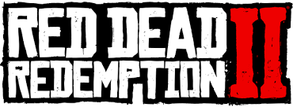

Welcome to this article about the game Red Dead Redemption 2
What is Red Dead Redemption 2 ?
About The Game:
The game is the third entry in the Red Dead series and a prequel to the 2010 game Red Dead Redemption. The story is set in a fictionalized representation of the United States in 1899 and follows the exploits of outlaw Arthur Morgan, a member of the Van der Linde gang, who must deal with the decline of the Wild West whilst attempting to survive against government forces, rival gangs, and other adversaries.

Release date and achievements:
Red Dead Redemption 2 was released for the PlayStation 4 and Xbox One in October 2018, and for Windows and Stadia in November 2019. It broke several records and had the second-biggest launch in the history of entertainment, generating US$725 million in sales from its opening weekend and exceeding the lifetime sales of Red Dead Redemption in two weeks. The game received critical acclaim, with praise directed at its story, characters, open world, graphics, music, and level of detail; some criticism was directed at its control scheme and emphasis on realism over player freedom. It won year-end accolades including Game of the Year awards from several gaming publications, and is considered an example of video games as an art form as well as one of the greatest video games ever made. It is among the best-selling video games with over 50 million copies shipped.
Game Play:
Red Dead Redemption 2's world features different landscapes with occasional travelers, bandits, and wildlife, and urban settlements ranging from farmhouses to towns and cities. Horses are the main forms of transportation, of which there are various breeds with different attributes. The player can steal horses and must train or tame wild horses to use them; to own a horse, they must saddle or stable it. Repeated use of a horse begins a bonding process, increased by leading, petting, cleaning, and feeding it, and the player will acquire advantages as they ride their horse. Stagecoaches and trains can be used to travel; the player can hijack a train or stagecoach by threatening the driver and rob its contents or passengers. The player may witness or partake in random events in the world, including ambushes, crimes, pleas for assistance, ride-by shootings, public executions, and animal attacks. They may be rewarded when helping others They may partake in side activities, including tasks with companions and strangers, dueling, bounty hunting, searching for collectibles such as rock carvings, and playing poker, blackjack, dominoes, and five finger filet. Hunting animals provides food, income, and materials for crafting items. The choice of weapon and shot placement affect the quality and value of meat and pelt, and the player can skin the animal or carry the carcass, which will rot over time, decrease its value, and attract predators. In addition to health and stamina bars, the player has cores, which affect the rate at which their health and stamina regenerate. Freezing or overheating rapidly drains cores, preventable by wearing weather-appropriate clothing. The player can gain or lose weight depending on how much they eat; an underweight character will have less health but more stamina, while an overweight character can better absorb damage but with less stamina. Eating and sleeping replenishes cores. The player can bathe to remain clean and visit a barber to change hairstyles; hair grows realistically over time. Weapons require cleaning to maintain their performance. Using a certain type of gun extensively improves weapon handling, reduces recoil, and increases the rate of reloading.The player can take cover, free aim, and target a person or animal. Individual body parts can be targeted to take down targets without killing them. Weapons consist of pistols, revolvers, repeaters, rifles, shotguns, bows, explosives, lassos, mounted Gatling guns, and melee weapons such as knives and tomahawks. The player can use Dead Eye to slow down time and mark targets. Once the targeting sequence ends, they fire to every marked location in a very short space of time. The Dead Eye system upgrades progressively and grants abilities such as targeting fatal points.
Story:
Some story moments give the player the option to accept or decline additional missions and lightly shape the plot around their choices. They can choose different dialogue trees with non-player characters (NPCs), such as being friendly or insulting. If they choose to kill an NPC, they can loot their corpse. The Honor system measures how the player's actions are perceived: morally-positive choices and deeds like helping strangers, abiding the law, and sparing opponents in a duel will increase Honor, while negative deeds such as theft and harming innocents will decrease it. Dialogue and outcomes often differ based on Honor level, and attaining milestones grants unique benefits: high Honor provides special outfits and store discounts, while low Honor grants more items from looting.
The Map:
The world of Red Dead Redemption 2 spans five fictitious U.S. states: New Hanover, Ambarino, and Lemoyne are located to the immediate north and east of New Austin and West Elizabeth, which return from Red Dead Redemption. Ambarino is a mountain wilderness, with the largest settlement being the Wapiti Native American reservation .New Hanover encompasses a sweeping valley and woody foothills that feature the cattle town of Valentine, the riverside Van Horn Trading Post, and the coal town of Annesburg; and Lemoyne is composed of bayous and plantations resembling the southeastern United States, and is home to the Southern town of Rhodes, the village of Lagras, and the former French colony of Saint Denis, analogous to New Orleans.West Elizabeth consists of wide plains, dense forests, and the prosperous port town of Blackwater;[9] the region is expanded from the original game with a northern portion containing the mountain resort town of Strawberry.New Austin is an arid desert region on the border with Mexico and centered on the frontier towns of Armadillo and Tumbleweed, featured in the original game.Parts of New Austin and West Elizabeth were redesigned to reflect the earlier time: Blackwater is under development, while Armadillo is a ghost town as a result of a cholera outbreak.
Rating:
The game was evaluated with an excellent and high evaluation from all sites due to the beauty of the game from the story and the gameplay etc. It also expresses one of the best games in history